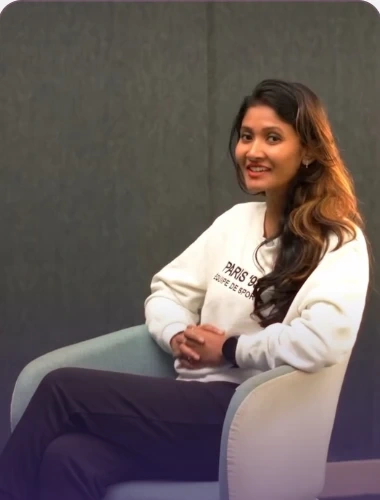
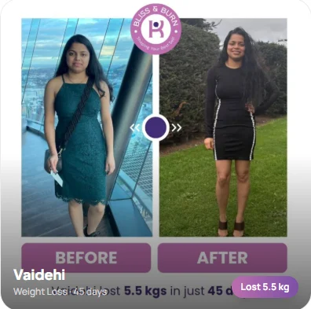
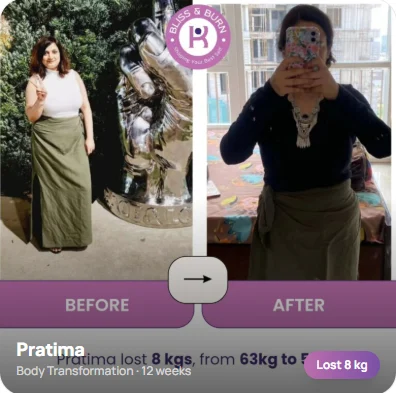
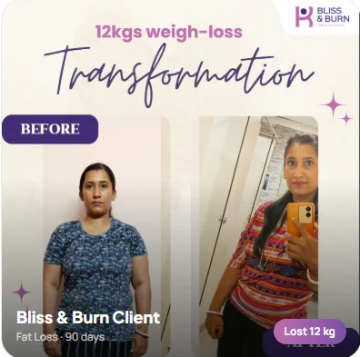

Weight loss and fitness
Build consistency with coach-led cardio, strength training and low-impact options that suit your starting level.
WOMEN-ONLY · 100% ONLINE
Build strength and work towards your weight-loss goals from home with live coaching, flexible batches and nutrition support on eligible plans.

YOUR STARTING POINT
Enter your height and current weight. If you have a goal weight in mind, see how far it is from your starting point.
A Bliss & Burn coach can help you choose a realistic goal, workout plan and batch during your free consultation.
MEMBER RESULTS
Three members share their progress with guided training and a routine that fit their lives.



Individual results vary with starting point, participation and lifestyle.
Chat on WhatsAppMEMBER REVIEWS
Divya had tried gyms, diets and apps. She says having a plan that fit her work schedule helped her stay consistent, feel more energetic and lose 10 kg over four months.
Ritu appreciated that her trainers understood Indian meals and daily routines. She says she lost 8 kg while following a way of eating she enjoyed.
Kavya was unsure about online training at first. She says her coach remembered her schedule and preferences and adjusted the experience around them.
Summarised from member stories published by Bliss & Burn. Individual outcomes vary.
Talk to a coach about your goals →Chat on WhatsAppWHAT YOU CAN WORK ON
Build consistency with coach-led cardio, strength training and low-impact options that suit your starting level.
Use Pilates, core work, mobility and strength sessions to build control, confidence and range of motion.
With an eligible plan, get guidance that takes your usual Indian meals, schedule and preferences into account.
LIVE ONLINE CLASSES
Each session runs for 45–60 minutes. Your coach demonstrates movements, guides your form and can adapt exercises to your fitness level. Live batches are capped at 12 women.
Classes include strength training, HIIT, LIIT, Zumba, aerobics, Pilates, yoga, mobility, core work and more.
Morning
5:45 AM · 7:00 AM · 8:00 AM · 11:00 AM
Evening
6:00 PM · 7:30 PM
MEET YOUR COACH
Snata, founder of Bliss & Burn, has more than a decade of coaching experience across Delhi NCR, Bengaluru, Mumbai and Kolkata. She and her certified team run women-only online sessions so members can build a fitness routine around their lives.
They use your goals, schedule and starting fitness level to guide your training. Progress can include better strength, stamina and consistency alongside changes on the scale.
COACHING OPTIONS
Start on your own, train with a coach, or add personalised nutrition guidance. Your consultation helps you compare options and find a suitable batch.
Follow recorded workouts when it suits you. A good fit if your schedule changes often and you prefer to train independently.
Ask about self-paced workouts →Join coach-led classes in small morning or evening batches. Get real-time guidance on form and movement.
Find my live batch →Combine live workouts with a customised diet plan and priority guidance from the team.
Get my plan recommendation →Structured coaching with unlimited classes, weekly nutrition updates, fitness counselling and ongoing guidance. Monthly, quarterly, six-month and annual packages are also available.
YOUR FREE CONSULTATION
Tell us what you want to improve, your experience with exercise and when you can realistically train.
We’ll discuss which coaching option, batch and nutrition support make sense for you.
The first 15-minute conversation is free. You can ask about fees and what’s included before you decide whether to join.
QUESTIONS
Yes. Coaches adjust movements to your current level and guide you in small live batches.
You can start with very little equipment. Ask your coach what is useful for your class and plan.
Live + Diet Plan and eligible longer programmes include a customised diet plan. Your coach can explain the nutrition support available in each option.
Yes. Choose an available morning or evening batch when your schedule changes.
Submit your enquiry and the Bliss & Burn team can contact you to discuss your free consultation. You can also message the team directly on WhatsApp.
Results depend on your starting point, participation and lifestyle. During the consultation, your coach can help you set a realistic goal and explain how progress is tracked.
FREE 15-MINUTE CONSULTATION
Get a recommendation for your goal and schedule. No payment or commitment for the first call.